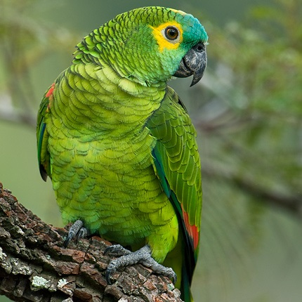

Animais Daora
Mamíferos
| Texugo | Guaxinim | Gambá |
|---|---|---|

|
||
| O texugo é um bicho preto e branco da família Mustelidae. | O guaxinim é um bicho cinza com branco e preto da família Procyonidae. | O gambá, também chamado de cassaco ou sarué, é um bicho cinza e branco da família Didelphimorphia. |
Aves
| Jandaia | Periquito | Papagaio |
|---|---|---|

|
 | |
| A jandaia é uma ave verde da família Psittacidae. | O periquito é uma ave verde da família Psittacidae. | O papagaio é uma ave verde da família Psittacidae. |
Répteis
| Lagartixa | Dragão-Barbudo | Dragão de Komodo |
|---|---|---|
| A lagartixa é um bicho amigável da família Gekkonidae. | O dragão-barbudo é um bicho estiloso da família Agamidae. | O dragão de Komodo é um bicho brabo da família Varanidae. |